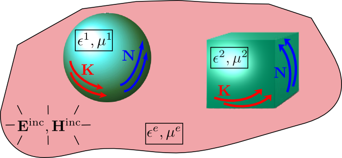
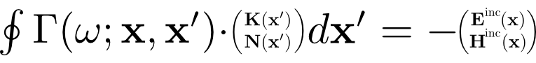
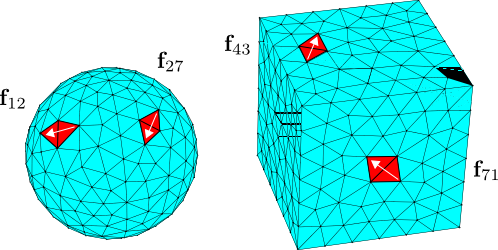
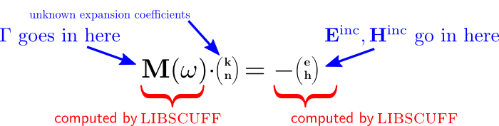

Under the hood: the algorithms implemented by scuff-em
This page offers some top-level overview sketches of the basic algorithms implemented by the various codes in the scuff-em suite.
For more details on the implementation of these algorithms, see Data Structures and Class Methods in scuff-em.
For further technical details on the scuff-em core library, check out the libscuff Implementation Notes and Technical Reference, available as a PDF document.
The core library (libscuff)
At its heart, the scuff-em core library is an implementation of the surface-integral-equation / boundary-element method (SIE / BEM) for solving electromagnetic scattering problems.
More specifically, scuff-em implements the EFIE and PMCHW formulations of the SIE / BEM with RWG basis functions used to expand tangential currents on the surfaces of compact 3D objects.
If all of those acronyms went by a little quickly, here's a sketch of the basic problem addressed by the scuff-em core library. We have a collection of homogeneous material objects (maybe gold or silicon spheres or cubes) embedded in some medium (generally vacuum or a dielectric liquid), we irradiate the configuration with some known electromagnetic disturbance (such as a plane wave), and we seek to compute the electromagnetic fields scattered from the objects. In a surface-integral-equation (SIE) method, we do this by first computing the surface currents induced on the object surfaces by the incident field. (For perfectly conducting scatterers we have only electric surface currents K; for general scatterers we have both electric and magnetic (N) surface currents.) Once we have solved for the surface currents, we can use them to evaluate the scattered fields anywhere we like.

To solve for the surface currents, we write down an integral equation relating the surface currents to the incident field. This integral equation basically says that the tangential components of the scattered field (the field due to the surface currents) should precisely cancel the tangential components of the incident field at the object surfaces. (This statement is more of a mnemonic than a rigorous description; see the technical memo for a more thorough treatment.) Schematically, the integral equation looks something like this:

where involves the dyadic Green's function for Maxwell's equations. Here the surface integral extends over the surfaces of all scattering objects in our scattering geometry, and the equation is required to hold at all points x on all object surfaces. (The equation is understood to apply only to the surface-tangential components of the vectors on the two sides.)
This is the surface-integral-equation (SIE) formulation of our scattering problem. To solve the integral equation numerically, we now proceed to discretize it by expanding the K and N surface currents in some basis of expansion functions. The particular functions used by libscuff are the "RWG" basis functions, which were defined in this paper:
"Electromagnetic Scattering by Surfaces of Arbitrary Shape," by S. Rao, D. Wilton, and A. Glisson, IEEE Transactions on Antennas and Propagation 30 409 (1982) http://dx.doi.org/10.1109/TAP.1982.1142818
The RWG basis functions are defined by meshing the surfaces of compact 3D objects into flat triangular panels, and assigning to each internal edge in the discretization a localized surface current that is sourced and sunk at the panel vertices opposite that edge:

Having introduced a discrete basis of expansion functions, our integral equation becomes a simultaneous system of linear equations:

This approach to solving surface integral equations is known as the boundary-element method (BEM), and the linear system in the equation above is sometimes known as the BEM system. The scuff-em core library provides routines for assembling the BEM matrix M, and the right-hand side vector of incident-field expansion coefficients, for arbitrary scattering geometries and arbitrary incident fields at arbitrary frequencies.
Then, using the matrix and RHS vector assembled by the core library, you can use external linear algebra software like lapack to solve the linear system, after which you can again use routines provided by the scuff-em core library to compute the scattered fields at arbitrary points.